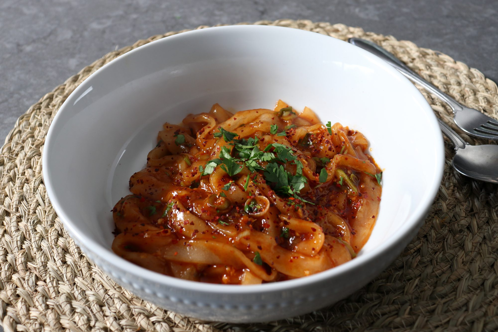

Spicy Garlic Potato Noodles

Description
When I first started filming and posting recipe videos, I was never too concerned with how well the recipes would turn out. As far as I was concerned, I wasn't in the successful recipe development business, I was in the teaching people how to cook business. So I'd often film things I was brand new to making, like these delicious and addictive potato noodles, and if things went sideways, which was often the case, I would simply use that as a "teaching moment."
By the way, I'm not strolling down memory lane to rationalize a recipe gone wrong, since this was a very enjoyable bowl of food, but I am explaining why I didn't perfect the technique before sharing it with the world. What you see in this video is what you might see and feel for yourself, and sometimes that's a better way to go in.
The key is to get a nice smooth, roll-able dough before the starch cools and looses its stretchiness. These are traditionally cut into thicker ribbons, and then rolled out into long round noodles, using your palms, but I've not mastered that method quite yet. However, when I do, I might film that version as well. Anyway, I hope you go out and find some potato starch (not potato flour) and give these a try soon. Enjoy!
Ingredients
Noodles:
- 1 cup potato starch, or as needed
- ¼ teaspoon kosher salt
- 1 teaspoon vegetable oil
- ¾ cup boiling water, or as needed
Garlic Sauce:
- 2 tablespoons oyster sauce
- 2 tablespoons soy sauce
- 2 tablespoons rice vinegar
- 4 teaspoons ketchup
- ¼ teaspoon sesame oil
- 1 teaspoon white sugar
- 1 tablespoon Sriracha sauce
- 1 tablespoon vegetable oil
- 6 cloves garlic, minced
- 1 teaspoon red pepper flakes, or to taste
- ¼ cup thinly sliced green onions
- ¼ cup chopped fresh cilantro, or to taste
Steps
- Combine 1 cup potato starch, salt, and vegetable oil in a bowl. Add a splash of boiling water at a time, stirring between additions, until you get a perfectly textured dough.
- Transfer to a work surface dusted with a little potato starch. Working quickly while the dough is still warm, knead, adding more potato starch if necessary, until smooth and elastic.
- Bring a large pot of lightly salted water to a boil. Set out a large bowl of cold water.
- While the water is boiling, roll dough to a thickness of 1/8 inch. Cut into 1/4-inch noodles with a pizza cutter. Separate noodles.
- Add potato noodles (in batches if desired) and cook until they float, about 1 minute. Transfer to the bowl of cold water. Repeat to cook remaining noodles.
- Whisk oyster sauce, soy sauce, rice vinegar, ketchup, sesame oil, sugar, and Sriracha together in a bowl.
- Heat vegetable oil in a skillet over medium-high heat. Add garlic and sizzle for 15 seconds. Add 1 teaspoon red pepper flakes and green onions; stir-fry for a just few seconds. Before the garlic starts to brown, add in the potato noodles. It's okay that some water comes into the pan as it will stop the cooking process and prevent the garlic from burning.
- Add sauce and stir until noodles are coated. Cook until noodles are heated through and sauce starts to simmer, 1 to 2 minutes. Turn off the heat and stir in 1/4 cup chopped cilantro.
- Divide noodles into 2 bowls and garnish with more cilantro and red pepper flakes.